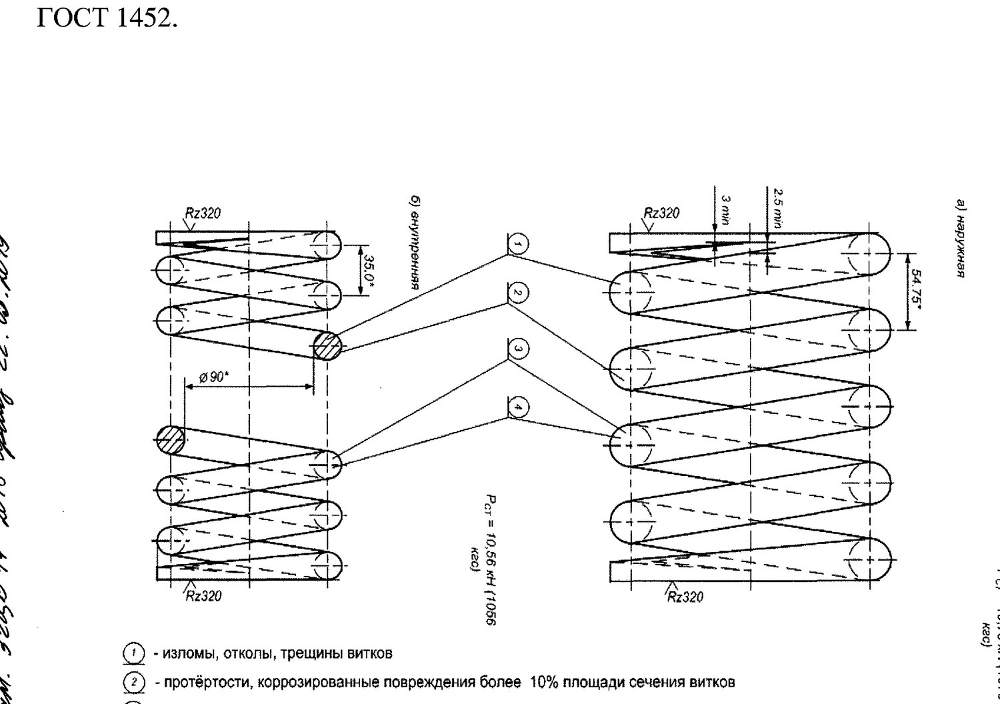

Payvand, naplavka va ressor komplektiga talablar
11 va 13-bo'limlar: prujinalarni brak qilish mezonlari, payvand materiallari, naplavka rejimlari va ish joyi talablari.
Prujinalarni brak qilish (11.1-band)
Prujinalar aravachadan texnik holatidan qat'i nazar yechiladi, tozalanadi va ko'zdan kechiriladi.

- o'ramlarning sinishi, uchishi, yoriqlari;
- ishqalanish izlari (protyortost), o'ram kesimi maydonining 10% dan ortiq korroziyasi;
- tayanch o'ramlarining siljishi;
- prujina balandligining 2.1-jadvalda belgilangan qiymatdan pasayishi.
Korxonalarda yangi tayyorlangan prujinalar ГОСТ 1452 ga mos bo'lishi shart.
Payvand va naplavka ishlari qayerda bajariladi (13.1-band)
Nadressor balkalari, yon ramalar va aravachaning boshqa tarkibiy qismlarida payvand va naplavka ishlari quyidagi hujjatlarga muvofiq bajariladi:
- «Yuk vagonlarini ta'mirlashda payvandlash va naplavka qilish bo'yicha yo'riqnoma» (ЦВ-201-2015);
- ВНИИЖТ ishlab chiqqan yo'riqnomalar: ТИ-05-01-06/НБ va ТИ-БР-2010.
Nima uchun naplavka qilinadi (13.2-band)
Naplavkaga tarkibiy qismlarning yuzalari duchor qilinadi — keyinchalik stanokda yoki mexanik ishlov berib З ilovasidagi chizma o'lchamigacha keltirish uchun.
Ya'ni naplavka o'z-o'zidan ta'mir emas: u faqat metall qo'shadi. Detal chizma o'lchamiga faqat keyingi mexanik ishlovdan so'ng keladi.
Yeyilishga chidamli naplavka materiallari (13.3-band)
| Usul | Material |
|---|---|
| Flyus ostida avtomatik naplavka (13.3.1) | Payvand simi Св-10ХГ2СМФ (ТУ 0805-001-18486807-99) yoki kukunli sim ПП-АН180МН (ТУ 127400-002-70182818-05); flyus АН-348-А ГОСТ 9087 |
| Himoya gazida mexanizatsiyalangan yoki avtomatik naplavka (13.3.2) | Kukunli sim ПП-АН180МН yoki payvand simi Св-10ХГ2СМФ; 1-nav uglerod ikki oksidi ГОСТ 8050 |
| Qoplamali elektrodlar bilan qo'lda naplavka (13.3.3) | ЭЖТ-1 markali elektrodlar (ТУ 1272-252-01124323-2008) |
Yeyilishga chidamlilik talab qilinmaydigan payvand (13.4-band)
| Usul | Material |
|---|---|
| Qo'lda payvandlash (13.4.1) | Э-50 А tipidagi elektrodlar ГОСТ 9467 (УОНИ-13/55 va boshqalar) |
| Mexanizatsiyalangan payvandlash (13.4.2) | Payvand simi Св-08Г2С ГОСТ 2246; 1-nav uglerod ikki oksidi ГОСТ 8050 |
Mexanik ishlov (13.5-band)
Naplavka qilingan yuzalar va payvand choklarini mexanik ishlash ixtisoslashtirilgan stanoklarda — frezerlash, teshish va rendalash stanoklarida, qo'shimcha moslamalar bilan jihozlangan holda bajariladi.
Ish joyiga qo'yiladigan talablar (13.7-band)
- kantovatellar (detalni ag'darish uchun);
- aylantirgichlar (vrashchateli);
- yuk ko'tarish uskunalari;
- mahalliy so'rish ventilyatsiyasi.
Yuk vagoni aravachasini ta'mirlashda qo'llaniladigan texnologik jihozlarning tavsiya etiladigan ro'yxati А ilovasida berilgan.
To'rt o'qli aravachaning biriktiruvchi balkasi (13.6-band)
To'rt o'qli aravachalarning biriktiruvchi balkalarida payvand va naplavka ishlari «To'rt o'qli aravachaning biriktiruvchi balkasini ta'mirlash bo'yicha tipik texnologik jarayon» ТК-232 I, II, III qismlari ko'zda tutgan texnologiya bo'yicha bajariladi.
Naplavka qattiqligini nazorat qilish
Nima uchun ikki tomondan chegaralangan: juda yumshoq naplavka tez yeyiladi, juda qattig'i esa mo'rt bo'lib yorilib ketadi.
Nazorat savollari
Avval o'zingiz javob bering, so'ngra tekshiring.
1. Qanday nuqsonli prujinalarni ressor komplektiga o'rnatish taqiqlanadi?
2. Naplavka nima uchun bajariladi?
3. Yeyilishga chidamli naplavka qanday qattiqlikni ta'minlashi kerak?
4. Flyus ostida avtomatik naplavkada qanday materiallar ishlatiladi?
5. Yeyilishga chidamlilik talab qilinmaydigan qo'lda payvandlashda qanday elektrodlar ishlatiladi?
6. Payvand ish joyi nima bilan jihozlangan bo'lishi kerak?
Manba: РД 32 ЦВ 052-2009 — ГОСТ 9246-2013 bo'yicha zazorli yon skolzunli tip 2 yuk vagon aravachalarini ta'mirlash. Umumiy ta'mir rahbariyati (2026-yil 1-iyuldan amaldagi tahrir).
Andijon vagon deposi · telejka ta'mirlash sexi.